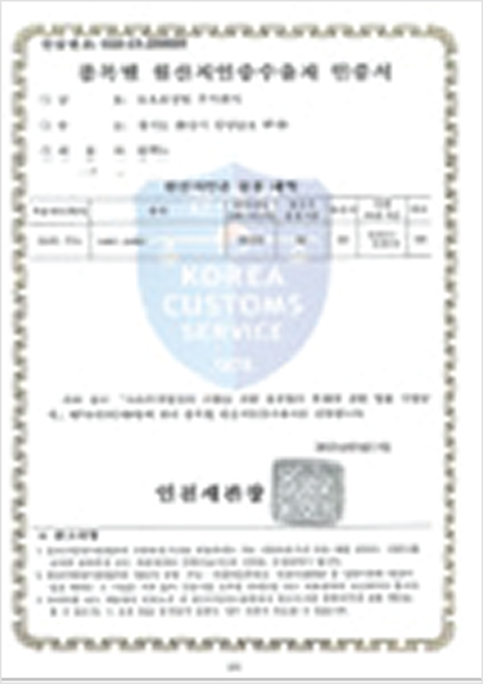

환경경영시스템
IATF 16949 / ISO 9001
-
뉴오토정밀의 기업활동은 기업이나 조직이 환경에 미치는 영향을 최소화하고 조화를 생각하며, 환경위험성의 효율적 관리 및 개선과 무재해 기업으로 환경안전보건 선도기업을 지향합니다.

품질경영
Environment
-
뉴오토정밀은 환경 오염물질의 배출을 최소화하고 효율적인 에너지 사용을 위하여 체계적으로 관리하고 있으며, 유해물질 관리 시스템을 구축하여 다가오는 미래의 환경 악화를 최소화하기 위하여 노력하고 있습니다.
Safety
-
중대사고 “제로화＂정책을 시행하고 있으며, 사업장 순회 점검, 위험성 평가 등을 시행하고 있습니다. 또한, 임직원의 안전을 최우선으로 주기적인 안전보건 교육을 실시하고 있습니다.
Health
-
건강한 일터를 만들어가기 위하여 작업환경 개선을 통해 건강한 회사를 추구하고 있으며, 건강검진 실시 및 건강관리실을 운영하고, 건강증진을 위한 프로그램을 시행하고 있습니다.